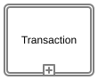
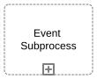
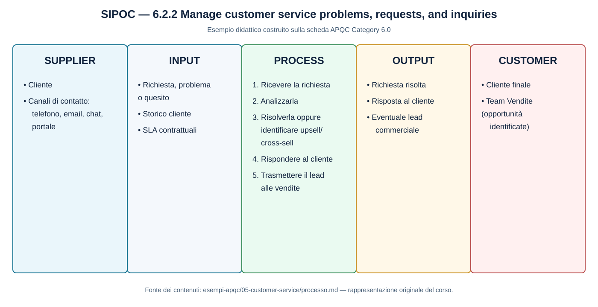
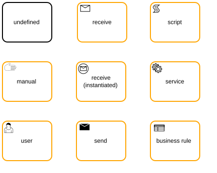
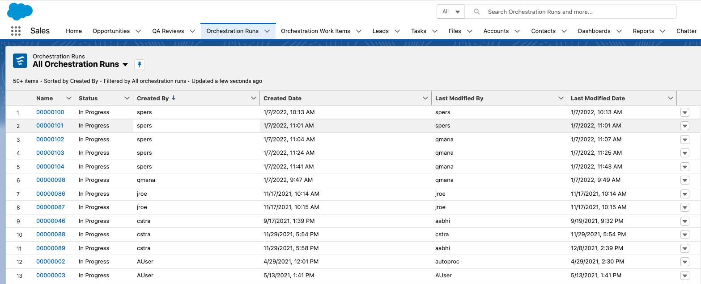
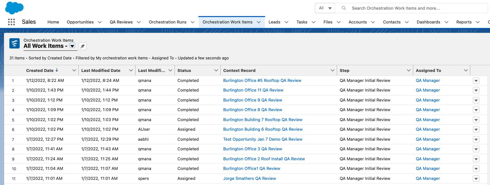

Indice del modulo
- 1 Il livello Activity
- 1.1 Definizione secondo il PCF
- 1.2 SIPOC: fornitori, input, processo, output e clienti
- 1.3 Leggere codice e identificativo
- 2 Il livello Task
- 2.1 Perché il PCF si ferma alla Activity
- 2.2 Criteri per individuare Task elementari
- 3 Orchestrare task automatici e human task
- 4 Schede di processo PCF completate
- 5 Caso SAEM: schede e materiali risolti
- 6 Laboratorio
1 Il livello Activity
Nel Process Classification Framework di APQC, l'Activity è il quarto livello della gerarchia: descrive un'area di lavoro concreta che contribuisce a completare un Process e produce un risultato intermedio riconoscibile. La gerarchia va dalla Category al Process Group, al Process e infine alle Activity; il livello Task, quando serve per descrivere l'esecuzione locale, viene definito dall'organizzazione. Questa distinzione è coerente con l'Introduzione APQC al PCF e con le FAQ sul PCF.
Un'Activity risponde alla domanda quale risultato operativo deve essere prodotto per completare il processo?, senza descrivere ancora ogni clic, controllo o gesto dell'operatore. Per esempio, nel Process APQC 6.2.2 Manage customer service problems, requests, and inquiries, «Analyze problems, requests, and inquiries» identifica il lavoro di analisi della richiesta; classificazione, verifica dello storico, controllo dello SLA e assegnazione sono possibili Task locali che rendono eseguibile quell'Activity.
Il nome dell'Activity usa di norma un verbo e un oggetto: il verbo indica l'azione o il risultato atteso, l'oggetto delimita ciò su cui si interviene. Il nome non va confuso con una procedura aziendale: organizzazioni diverse possono svolgere la stessa Activity con ruoli, sistemi, documenti e livelli di automazione differenti. L'BPMN Reference di Camunda aiuta a rappresentare poi questi passi in un diagramma, ma la classificazione APQC e il modello BPMN hanno scopi diversi.
La relazione tra i livelli può essere letta come una progressiva riduzione del perimetro: la Category raggruppa un dominio, il Process Group raccoglie processi affini, il Process delimita un risultato end-to-end, l'Activity identifica un blocco di lavoro e i Task descrivono le azioni osservabili necessarie per completarlo.
1.1 Definizione secondo il PCF
Ogni Process del PCF è scomposto in un insieme di Activity correlate. L'elenco APQC è un modello di classificazione e confronto, non una procedura obbligatoria né una sequenza BPMN già pronta: l'organizzazione può eseguire le Activity in un ordine diverso, accorparne alcune, introdurre attività locali o non applicare quelle non pertinenti, mantenendo il riferimento al codice originale.
Per descrivere correttamente un'Activity conviene documentare almeno: perimetro (dove inizia e dove termina), risultato prodotto, input necessari, ruolo o sistema responsabile, principali regole e decisioni, output consegnato all'Activity successiva e condizioni di eccezione. Questi campi trasformano un'etichetta tassonomica in una base utile per la successiva analisi del lavoro.
L'Activity non implica necessariamente un singolo rettangolo BPMN. Può essere rappresentata da una sequenza di Task, da un sotto-processo o da un gruppo di elementi distribuiti tra più corsie. In BPMN un task è un'attività atomica del diagramma, mentre un sub-process contiene un dettaglio ulteriore: la corrispondenza tra Activity APQC e costrutti BPMN va quindi decisa in base al livello di dettaglio richiesto.
Nel metamodel BPMN, Activity è il termine generale per un lavoro eseguito nel flusso. Le principali specializzazioni sono Task (unità di lavoro atomica), Sub-Process (attività composta da un flusso interno), Call Activity (invocazione di un processo o di un global task riusabile) e Transaction. La Transaction non è un quarto contenitore indipendente: è un Sub-Process con protocollo transazionale e doppio bordo, usato quando le attività devono concludersi con accordo completo oppure essere annullate. La BPMN Reference di Camunda elenca inoltre l'Event Sub-Process come variante attivata da un evento.

| Tipo BPMN | Icona dalla BPMN Reference | Uso principale |
|---|---|---|
| Task |  | Unità atomica di lavoro svolta da una persona, da un'applicazione o da entrambi. |
| Sub-Process |  | Raggruppa un flusso interno e consente di nascondere o espandere il dettaglio. |
| Call Activity |  | Richiama un processo o un global task definito e riusabile. |
| Transaction |  | Sub-Process con protocollo di accordo o annullamento tra le parti. |
| Event Sub-Process |  | Flusso interno attivato da un evento, eventualmente in modalità interrupting o non-interrupting. |
Una traccia operativa è: (1) leggere il verbo e l'oggetto APQC; (2) verificare l'output che chiude l'Activity; (3) individuare chi la esegue e quali sistemi usa; (4) elencare i Task osservabili; (5) modellare il flusso con eventi, gateway, corsie e Task BPMN; (6) controllare che il diagramma non allarghi il perimetro del codice PCF.
| Livello | Domanda | Output della descrizione |
|---|---|---|
| Process | Quale risultato end-to-end deve essere ottenuto? | Confine del processo, cliente e risultato complessivo. |
| Activity | Quale blocco di lavoro contribuisce al risultato? | Risultato intermedio, input/output e responsabilità principale. |
| Task | Quale azione osservabile viene eseguita? | Passo operativo con esecutore, regola ed esito verificabile. |
Per la terminologia grafica e la distinzione tra attività atomiche e sotto-processi si può consultare la BPMN Reference; per la costruzione del primo diagramma online è disponibile la guida Camunda Model your first diagram.
1.2 SIPOC: fornitori, input, processo, output e clienti
Poiché input e output aiutano a delimitare un'Activity, è utile introdurre il SIPOC, acronimo di Suppliers, Inputs, Process, Outputs, Customers. Secondo la definizione dell'American Society for Quality (ASQ), è uno strumento di raccolta dati che offre una vista ad alto livello dei fornitori, degli ingressi, delle macro-fasi, dei risultati e dei destinatari di un processo. Si compila dopo aver fissato i confini — evento di avvio e risultato finale — e prima di costruire il flusso dettagliato: il Process contiene in genere poche macro-fasi, non l'elenco dei Task.
Un SIPOC consente di verificare che ogni input abbia un fornitore, che ogni output abbia un cliente e che il perimetro del processo sia condiviso dagli stakeholder. Supplier e Customer possono essere interni o esterni; Input e Output possono essere materiali, documenti, dati, decisioni o servizi. Non sostituisce la scheda Activity né il diagramma BPMN: li prepara, rendendo espliciti gli scambi ai bordi del processo.
Esempio dalla scheda APQC Category 6.0 — Manage Customer Service. Per il Process 6.2.2 Manage customer service problems, requests, and inquiries, la scheda già preparata identifica il trigger nella ricezione di una richiesta, problema o quesito del cliente e l'output nella risposta fornita, con eventuale opportunità di upsell trasmessa alle vendite:

1.3 Leggere codice e identificativo
Una voce APQC può presentarsi come «6.2.2.2 Analyze problems, requests, and inquiries (13482)». Il codice gerarchico 6.2.2.2 si legge da sinistra a destra: 6.0 Category Manage Customer Service, 6.2 Process Group Plan and manage customer service contacts, 6.2.2 Process Manage customer service problems, requests, and inquiries, 6.2.2.2 Activity. Il codice descrive quindi la posizione nell'albero.
Il numero tra parentesi, 13482, è l'identificativo univoco APQC. Non è un livello aggiuntivo e non sostituisce il codice gerarchico: serve a citare la stessa voce in documenti, fogli Excel, strumenti di benchmarking e versioni del framework anche quando il testo o la posizione vengono aggiornati. Nei materiali conviene riportare sempre entrambi, per esempio 6.2.2.2 (13482).
Codice gerarchico e identificativo hanno quindi funzioni diverse:
- codice gerarchico: mostra il ramo e il livello della voce; permette di capire da quale Category, Process Group e Process discende;
- identificativo univoco: fornisce un riferimento stabile alla definizione APQC e facilita ricerca, confronto e tracciabilità;
- nome: rende leggibile il contenuto, ma può essere tradotto o adattato senza perdere il riferimento numerico.
Il codice PCF non è un identificativo BPMN. Nel diagramma Camunda ogni elemento ha un proprio ID tecnico XML e un nome visualizzato; l'ID BPMN serve al motore e agli strumenti di modellazione, mentre il codice APQC serve a classificare il lavoro. È buona pratica riportare il codice APQC nel nome, nella documentazione o nelle proprietà del modello, senza confondere i due sistemi di identificazione.
La lettura del codice consente infine di controllare la coerenza del modello: un Task locale dovrebbe essere collegato a una Activity, l'Activity a un Process e il Process al ramo PCF corretto. Se un diagramma contiene attività che non possono essere ricondotte al perimetro di 6.2.2.2, occorre dichiarare se si tratta di un'eccezione, di un'attività di supporto o di un altro Process.
2 Il livello Task
Il Task è un'unità di lavoro elementare: descrive un'azione che può essere assegnata a un esecutore, osservata e conclusa con un risultato verificabile. Nel PCF APQC il Task è il dettaglio operativo che l'organizzazione aggiunge sotto una Activity; in BPMN è anche un elemento grafico e semantico del diagramma, rappresentato da un rettangolo arrotondato.
Un Task deve chiarire almeno chi o che cosa esegue il lavoro, quale input utilizza, quale trasformazione compie e quale output rende disponibile. L'esecutore può essere una persona, un'applicazione o una combinazione dei due. Il termine italiano attività è quindi ambiguo: nel PCF indica il livello tassonomico Activity, mentre in BPMN Activity è la super-classe che comprende Task e Sub-Process.
La BPMN Reference distingue i Task generici dai Task tipizzati. Il tipo non serve a rendere il disegno più dettagliato in modo ornamentale: comunica il meccanismo previsto per eseguire o coordinare il lavoro. Per esempio, una richiesta di approvazione svolta da una persona è un User Task; l'invio automatico di una notifica è un Service Task o un Send Task, a seconda che si rappresenti l'elaborazione automatica o l'atto di invio del messaggio.
Il PCF e BPMN restano complementari: il codice APQC collega il Task locale all'Activity e al Process; il tipo BPMN descrive come quel passo entra nel flusso e chi lo esegue. Un'Activity APQC può quindi essere scomposta in più Task BPMN, anche di tipi diversi, senza pretendere una corrispondenza uno-a-uno.
2.1 Perché il PCF si ferma alla Activity
Sotto la Activity la variabilità tra organizzazioni diventa troppo alta per una tassonomia cross-industry. La stessa Activity può essere svolta manualmente, con un ERP, con un portale self-service, con un servizio integrato o con una combinazione di questi strumenti. Può inoltre cambiare il ruolo responsabile, la sequenza dei controlli, il livello di autorizzazione e la granularità dei passi.
Fissare i Task nel PCF renderebbe il framework rigido e poco riusabile: APQC manterrebbe una procedura locale al posto di un riferimento comune. La separazione mantiene stabile la parte condivisa e lascia all'organizzazione la definizione delle azioni, delle regole, delle eccezioni, dei sistemi e delle evidenze da registrare.
La tipizzazione BPMN non contraddice questa scelta. Un User Task o un Service Task è una decisione di modellazione della soluzione corrente, non una nuova voce APQC. Se la soluzione cambia — per esempio un'approvazione passa da un operatore a una regola automatica — il codice Activity può restare lo stesso, mentre cambia il tipo BPMN e cambiano ruoli, dati e KPI da verificare.
Per mantenere la tracciabilità, la scheda dovrebbe riportare il codice e il nome dell'Activity APQC, l'elenco dei Task locali, il tipo BPMN scelto, l'esecutore, l'output e la motivazione della scomposizione. In questo modo il dettaglio operativo può evolvere senza perdere il collegamento al framework.
2.2 Criteri per individuare Task elementari
Un Task è ben definito quando ha un esecutore prevalente, un input riconoscibile, un esito verificabile e una durata breve rispetto alla Activity. La sua formulazione dovrebbe iniziare con un verbo osservabile — ricevere, validare, classificare, approvare, inviare, registrare — e indicare l'oggetto su cui si interviene.
Per testare la granularità si possono porre sei domande: (1) il passo ha un solo responsabile o un sistema chiaramente identificato? (2) produce un risultato che può essere controllato? (3) richiede una sola decisione principale? (4) usa un insieme coerente di input e strumenti? (5) può essere misurato con un tempo, un esito o un errore? (6) l'eventuale eccezione ha un punto di uscita riconoscibile? Se le risposte sono negative, il passo è probabilmente troppo grande o troppo vago.
Se un presunto Task richiede più ruoli, più decisioni indipendenti o due risultati distinti, va scomposto ulteriormente. Se due passi si eseguono sempre insieme, con lo stesso esecutore e senza un controllo intermedio utile, possono essere accorpati. La scomposizione non deve però arrivare al gesto fisico o al clic sullo schermo: il livello corretto è quello che rende il lavoro assegnabile, misurabile e modellabile.
La scelta del tipo BPMN va fatta dopo aver definito il lavoro: human indica un lavoro affidato a una persona e in BPMN corrisponde normalmente a User Task; manuale indica un lavoro umano non gestito dal motore e corrisponde a Manual Task; automatico è un termine descrittivo, non un tipo unico, e può essere rappresentato da Service Task, Script Task o Business Rule Task.

| Tipo BPMN | Significato operativo | Esempio nel customer service |
|---|---|---|
| Task generico | Unità di lavoro non ancora tipizzata; utile nelle fasi iniziali o quando il meccanismo di esecuzione non è deciso. | Valutare la richiesta, prima di decidere se sarà svolta da operatore o sistema. |
| User Task / human task | Lavoro eseguito da una persona, normalmente attraverso una lista di lavoro o una form; in Camunda può essere collegato a una form di approvazione o raccolta dati. | Classificare la richiesta e approvare un'eventuale escalation. |
| Manual Task | Lavoro umano svolto fuori dal motore e senza una gestione automatica della worklist; serve a documentare un passaggio fisico o organizzativo. | Contattare telefonicamente il cliente e annotare l'esito in un sistema esterno. |
| Service Task / automatico | Invoca un servizio, connettore o job worker per eseguire un'operazione automatica. | Creare o aggiornare il ticket nel CRM e recuperare lo storico cliente. |
| Script Task | Esegue uno script definito nel processo per una trasformazione o una piccola elaborazione. | Normalizzare il codice della richiesta o calcolare una priorità tecnica. |
| Business Rule Task | Valuta una regola o una decisione, spesso tramite una decision table DMN. | Determinare se la richiesta rientra nello SLA o richiede escalation. |
| Send Task | Invia un messaggio a un partecipante o sistema esterno. | Inviare al cliente la risposta oppure trasmettere il lead al team Vendite. |
| Receive Task | Attende la ricezione di un messaggio; il processo resta in attesa fino all'evento previsto. | Attendere la risposta del cliente o la conferma del team Vendite. |
La distinzione tra User Task e Manual Task è importante: entrambi coinvolgono una persona, ma solo il primo è normalmente gestito come lavoro assegnabile nel motore e può essere associato a una form. Send e Receive Task modellano invece la comunicazione; Service, Script e Business Rule Task modellano forme diverse di automazione. La scelta deve riflettere il comportamento reale e non soltanto l'aspetto grafico del diagramma.
Nel caso di un human task, la form è l'interfaccia con cui l'utente legge le istruzioni, inserisce o modifica dati e comunica l'esito del lavoro. In un flusso di approvazione può contenere, per esempio, un campo decisione approvato/rifiutato, commenti e allegati: la sottomissione della form completa il User Task, registra le variabili di processo e consente al gateway o al passo successivo di avanzare sul ramo corretto. Finché l'utente non completa il task, l'istanza resta in attesa.
Un esempio ufficiale è la user task Configure della documentazione Camunda: la task viene collegata a una Camunda Form tramite un formId, può essere assegnata a un utente o a un gruppo e, una volta completata in Tasklist, restituisce i dati al processo. Si può consultare l'esempio XML nella guida User tasks e la guida alla creazione di Camunda Forms. La form può essere collegata al modello e visualizzata in Tasklist oppure gestita da un'applicazione personalizzata.
3 Orchestrare task automatici e human task
Quando un processo alterna attività automatiche e lavoro umano, il problema non è soltanto disegnare la sequenza: occorre coordinare tempi, assegnazioni, dati, attese, esiti ed eccezioni. Un motore di workflow deve avviare il task automatico, fermarsi quando serve l'intervento umano, rendere disponibile il lavoro alla persona corretta e riprendere il flusso con i dati restituiti.
Il caso Salesforce Flow Orchestration mostra una soluzione concreta. Una orchestration coordina fasi e passi: gli interactive steps richiedono intervento dell'utente e generano un work item, mentre i background steps eseguono flow automatici senza interazione. I passi possono essere sequenziali o concorrenti; le fasi raggruppano i passi e definiscono quando una fase è completata.
Salesforce espone due viste operative distinte. Orchestration Runs serve al supervisore per monitorare le istanze in corso, lo stato, la data e l'autore; da una run in corso è possibile intervenire, per esempio annullando o eseguendo il debug. Orchestration Work Items raccoglie invece i lavori assegnati agli utenti, con stato, record di contesto, passo e assegnatario. La distinzione separa il controllo dell'istanza end-to-end dal lavoro da svolgere su un singolo passo.


Il Work Guide Salesforce è il punto di lavoro dell'utente: un componente inserito nella pagina del record mostra il lavoro interattivo e consente di completarlo senza cambiare strumento. È concettualmente simile alla Camunda Form collegata a un User Task: entrambi raccolgono dati e un esito umano, aggiornano le variabili e fanno avanzare il processo; cambiano però il prodotto, il modello di assegnazione e il contesto applicativo.
La lezione progettuale è separare tre responsabilità: l'orchestratore controlla lo stato dell'istanza e le dipendenze; il task automatico esegue una trasformazione o integrazione; il work item/human task raccoglie una decisione o un dato dalla persona. Un modello è completo quando esplicita anche timeout, riassegnazione, errore, rifiuto e percorso di compensazione.
4 Schede di processo PCF completate
Le sette schede di processo APQC già sviluppate applicano lo stesso percorso: collocazione Category → Process Group → Process → Activity, scomposizione didattica in Task, SIPOC, matrice delle variabili, KPI e diagramma BPMN.
- Visione e strategia — Assess the external environment (1.1.1) (BPMN)
- Vendite — Develop sales forecast (3.4.1) (BPMN)
- Acquisti — Select suppliers and develop/maintain contracts (4.2.3) (BPMN)
- Servizi — Create and manage resource plan (5.2.2) (BPMN)
- Customer Service — Manage customer service problems, requests, and inquiries (6.2.2) (BPMN)
- IT — Operate IT user support (8.7.8) (BPMN)
- Finance — Invoice customer (9.2.2) (BPMN)
Le schede Markdown sono il riferimento testuale; i file BPMN sono diagrammi di rappresentazione, apribili con Camunda Modeler e non configurati per l'esecuzione.
5 Caso SAEM: schede e materiali risolti
Il caso SAEM applica lo stesso schema a processi reali, con ruoli, sistemi, criticità e dati documentati. La pagina del caso di studio SAEM raccoglie il quadro aziendale, la mappatura APQC, le fonti e lo stato delle elaborazioni.
- Gestione ordine telematico — scheda processo, diagramma BPMN e roadmap dei diagrammi;
- Selezione e qualifica fornitori — scheda processo e diagramma BPMN;
- Customer service: ritiro, resi e riparazione — scheda processo e diagramma BPMN;
- Fatturazione settimanale — scheda processo e diagramma BPMN.
Per seguire l'evoluzione dei requisiti e delle fonti sono disponibili anche la sintesi didattica del caso e l'inventario/roadmap dei diagrammi.
6 Laboratorio
Prendere una Activity di uno dei domini APQC e scomporla in quattro-sei Task, indicando per ciascuno l'esecutore e l'esito verificabile.
Confrontare le scomposizioni in aula e discutere le differenze di granularità.
Punti chiave
- La Activity è il quarto livello PCF: un passo del Process con esito intermedio, descritto da verbo e oggetto.
- Il PCF non definisce i Task perché dipendono da organizzazione, strumenti e prassi locali.
- Un Task ben definito ha esecutore unico, esito verificabile e durata breve rispetto alla Activity.
- La scomposizione si ferma quando un dettaglio in più non cambia responsabilità, tempi o strumenti.